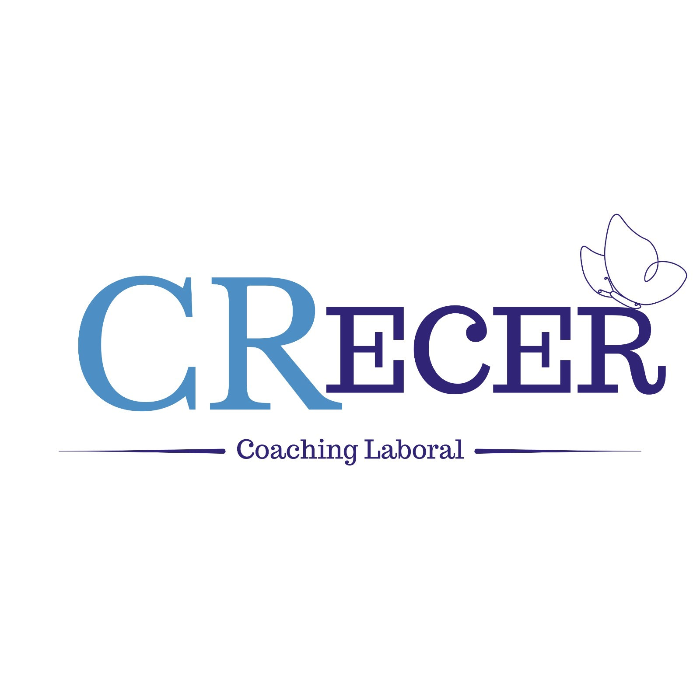
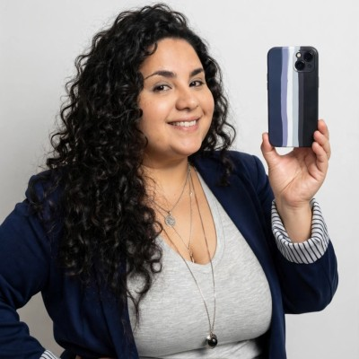

Un cambio
con dirección.
Si querés dar un giro y no sabés por dónde empezar, ordenamos tus ideas, tus prioridades y tus próximos pasos.
CARRERA & TRANSICIONES
UN ESPACIO PARA TU PRÓXIMO PASO
No necesitás tener todas las respuestas.
A veces, solo necesitás un espacio para encontrarlas.
Soy Celeste Rivero. Te acompaño a ordenar tus ideas, reconocer lo que tenés para dar y construir un camino laboral con más sentido.

01 / PARA HACER UNA PAUSA
Reflexiones que comparto en CRecer.
Tocá una publicación y quedate un ratito.@crecer_coach_laboral ↗
02 / LA PERSONA DETRÁS DE CRECER
El trabajo ocupa una parte enorme de nuestra vida. Merece un lugar donde podamos reconocernos.
Mi recorrido une Recursos Humanos, capacitación, procesos y tecnología. Con más de cinco años de experiencia en administración de personal y formación, aprendí a mirar más allá de un puesto: a escuchar a la persona que hay detrás.
Hoy, desde CRecer, acompaño a quienes quieren mover su carrera, recuperar confianza o encontrar una dirección. Un espacio para poner en palabras lo que te pasa y convertirlo en pasos posibles.
03 / ENCONTRÁ TU PUNTO DE PARTIDA
Podemos trabajar sobre lo que hoy necesitás.
Sin recetas únicas. Con un plan que tenga sentido para vos.
Si querés dar un giro y no sabés por dónde empezar, ordenamos tus ideas, tus prioridades y tus próximos pasos.
CARRERA & TRANSICIONESAsesoría de CV y LinkedIn para reconocer tus fortalezas, poner en valor tu recorrido y comunicar tu perfil profesional.
CV & LINKEDINOrientación para explorar tus intereses y habilidades, conocerte mejor y conectar con opciones de desarrollo.
ORIENTACIÓN VOCACIONALUn espacio para trabajar la comunicación, la motivación y las emociones que también forman parte de tu vida laboral.
DESARROLLO PERSONALBAJAR EL RUIDO. ESCUCHARTE.
No saber qué querés no significa estar atrasado. Podemos empezar por una pregunta, una conversación y un paso a la vez.
Busquemos tu punto de partida ↗04 / PREGUNTAS QUE ABREN CAMINOS
Quizás alguna de estas sea la que necesitabas hoy.
05 / ASÍ PODEMOS TRABAJAR
No hay recetas mágicas. Hay escucha, preguntas y herramientas para construir tu próximo movimiento profesional.
Conversamos sobre tu momento actual, lo que te preocupa y eso que te gustaría cambiar.
Exploramos tus fortalezas, tus intereses y las dudas que hoy te frenan. Le ponemos palabras a tu objetivo.
Definimos acciones concretas y posibles para que puedas empezar a avanzar a tu ritmo.
06 / LO QUE PIENSO, LO QUE COMPARTO
Ideas sobre carrera, personas y trabajo.
Abrí cada texto para leerlo acá y seguir la conversación en LinkedIn.
07 / UN RECORRIDO QUE SIGUE CRECIENDO
Atención y servicios financieros en Telemercado. El vínculo con las personas como punto de partida.
Capacitación y administración de personal en Telemercado. Procesos, legajos digitales y herramientas para aprender.
RR. HH. en Grupo Conte Mas (2024–2025) y soporte en Fidelitytools desde mayo de 2025.
Coach Laboral e Inteligencia Emocional en Axon Training. Herramientas para acompañar nuevos caminos.
08 / MÁS DE ESTE ESPACIO
Emociones, decisiones y pequeños recordatorios.
Más publicaciones de CRecer, para mirar con tiempo.
09 / HAGAMOS LUGAR A LO QUE VIENE
No hace falta llegar con todo resuelto.
Podés empezar contándome qué te está pasando.
+54 9 3513 94-2980
crecer.coaching.cr@gmail.comDESDE CÓRDOBA, PARA DONDE ESTÉS
Trabajo desde la zona centro de Córdoba, Argentina.
Referencia: Av. Vélez Sarsfield 84.
Mi acompañamiento también puede llegar a vos, estés donde estés.
¿Y si tu próximo paso es una charla?
Hola Cele, quiero CRecer ↗